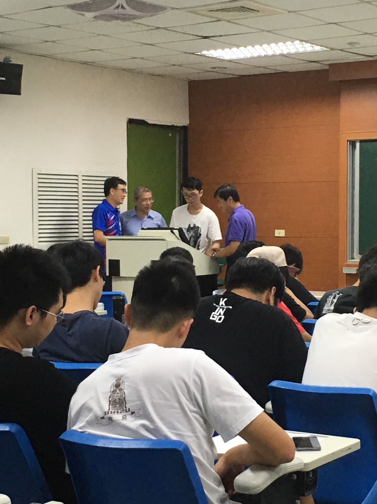
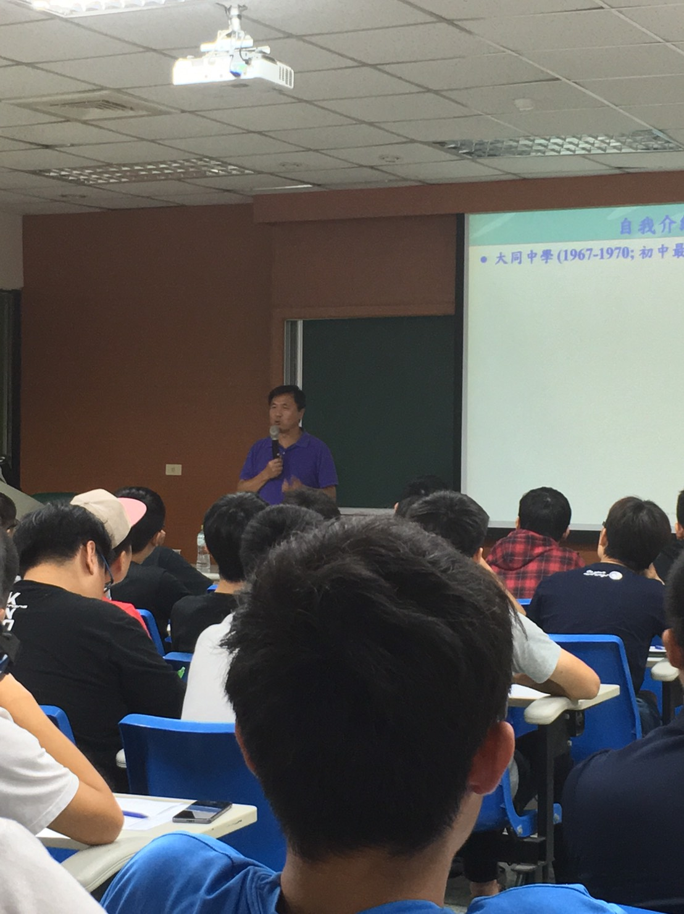

|
主講人:徐爵民 教授
- 國立清華大學資訊工程學系 李國鼎講座教授
- 國際電機電子工程師學會(IEEE)會士
- 工研院院長
- 科技部部長
- 研究領域 (Research Areas)：
微電子系統設計
電子設計自動化
科技管理
|

|
【演講內容】
科技的創新有無限的可能，充滿了不確定性及挑戰性，最重要的就是要把基礎打好，從小做起，一
步一腳印的往前才有可能將構想付諸實現，不可能一步登天，馬上就達成目標。
做任何事除了要打好基礎外，鍛鍊出獨立思考、判斷的能力也是相當重要的。培養獨立思考的能力有三個很重要的步驟：第一是要多問為什麼，第二是要時常保持好奇心，第三是要訓練想像力。首先針對第一點多問為什麼來探討，以思考習慣來區分的話，可以簡單分成淺層思考跟深度思考兩種。大部分人的思考習慣主要都是淺層思考，而只有少部分的人的思考習慣是深度思考。所謂的淺層思考習慣，事實上應該是說大腦對外界刺激的慣性反應模式，不太能算是有在進行思考。而深度思考則是對於某些特定的事，做長期的思考與收集相關資料或實驗。但並不是就代表有深度思考習慣的人就是有獨立思考的習慣，因為很多人在其專業領域裡，也一樣經常在做思考與研究，但如果是在其他非專業領域中一樣會跟一般人用「刺激與反應」的模式在生活。
第二點保持好奇心，要培養、訓練獨立思考能力的相關因素主要有：不斷的閱讀、學習、多問為什麼、多接觸不同文化的人事物、培養觀察力等。而這四項基礎能力其源頭也就是「好奇心」，所以好奇心是非常重要的。
第三點訓練想像力跟每個人的「人生歷練」、「用心生活」與「心態開放」的程度有正相關。也就是說當你越用心的過生活，或者說越懂得站在別人的角度看事情時，你就越能把這種想像力發揮出來，慢慢的你就會發現你在生活上與工作上，可以更得心應手或完成別人認為不容易完成的事情。
時間是最寶貴的資產但同時也是最大的障礙，由於現代資訊氾濫的緣故，使得人們容易生活在虛擬實境中，因此就導致了用心閱讀、思考的時間變少了。雖然現代生活中資訊接收變的相當的容易，但是由於每個人所接收到的資訊量不盡相同，因此就可能會造成收到資訊較少的人在沒有完整了解事情的經過下就去著他人起鬨。而花過多時間在網路上也造成了人與人之間的疏遠。
【活動照片】




|  回首頁
回首頁